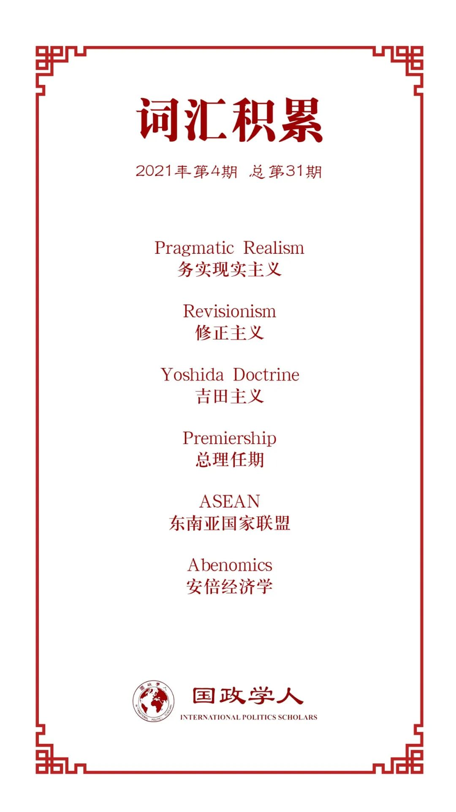

收录于合集

作品简介
【作者】 拉米雷斯·卡洛斯（Ramirez Carlos）日本近畿大学国际关系研究院教授，研究国际社会在世界经济和文化融合中面临的问题，特别是国际关系以及国际关系理论中的一系列问题。
【编译】 戎秦婴 （国政学人编译员，辽宁大学国际政治专业）
【校对】 戴赟
【审核】 姚寰宇
【排版】 毛雅欣
【美编 】臧泽华
【来源】 Ramirez,Carlos “.Japan’s Foreign and Security Policy under Abe: from neoconservatism and neoautonomy to pragmatic realism " The Pacific Review (2021):1-34 .DOI:10.1080/09512748.2019.1653358
【归档】 《国际关系前沿》2021年第4期，总第31期。
期刊简介
《太平洋评论》(The Pacific Review)是太平洋地区研究的主要平台，作为跨学科期刊，其宗旨和目标为打破研究领域之间以及学术界、新闻界、政府和商界之间的壁垒，重点关注政策问题。根据Journal Citation Reports显示，2019年该刊的影响因子为1.633，在区域研究类SSCI期刊中排名11/77，在国际关系类SSCI期刊中排名第35/95。
安倍领导下的
日本外交与安全政策： 从新保守主义、新自治模式到 务实现实主义
Japan’s Foreign and Security Policy under Abe: from neoconservatism and neoautonomy to pragmatic realism
Ramirez Carlos
内容提要
本文首先从学界对于日本外交安全政策的争议入手，讨论日本是一个值得信赖的自由主义国家，还是修正主义国家；其次介绍了本文的理论框架，采用折中主义的理论方法，运用现实主义、自由主义和建构主义三大理论，同时采用物质和理念的二分法；再次，本文具体介绍安倍执政的不同阶段，认为其可分为三个不同的阶段，分别为新保守主义、“新自治模式”和务实现实主义。最后本文得出日本的外交政策相对于过去已有重大突破，并且走上了外交与安全政策再军事化的道路。
关键词： 新保守主义 新自治模式 务实现实主义 安倍晋三 外交与安全政策
文章导读
01
引言
日本外交政策观察家对于下列问题展开了激烈的讨论，涉及安倍晋三担任首相期间的日本外交和安全政策，以及日本是一个维护现状的和平主义与自由主义国家还是一个具有复仇主义和修正主义国家角色，最后如何看待日本外交政策出现的激进转变和重新军事化。当然，学界对日本外交安全政策确实出现变化这一点达成共识，分歧在于这些变化是与过去吉田主义路线的彻底决裂还是仅随时间变化而出现微小、渐变的调整。本文主要从两方面入手，首先使用萨缪尔斯（Samuels）提出的政治范畴，确定并概括安倍政府三个时期的外交政策；其次本文探讨了政策转变出现的原因，采用克拉斯纳（Carlsnaes）层次分析框架，考虑行为体、国内和国际三方面因素的政策塑造作用，同时运用三大国际关系理论综合互补分析。最后阐明日本已经进入一个全新的外交和安全政策的强势时代。
02
外交与安全政策——一种折中的理论方法
学界在具体研究中除了对日本政策的变量有争议，对于变化因素本身也存在分歧，其表现在两个层次上，而在这两层次上分歧都基于理论的视角，如传统的三大理论。此外与层次理论相关的外交政策分析围绕两个二分法：施动者- 结构（agency-structure） 、物质力量与理念。传统理论视角试图将这些二分法付诸实践，但在解释政策和行为结果时通常仅强调其中一方的作用。
在第一个以及更深层次中，关于推动变革的力量是否为物质，仍存在争论；在第二个层次上每个理论视角都强调不同的形象和层次分析，也就是通常所谓的个人、国家和国际层次（Waltz，1959），在日本外交政策的研究中，学者往往仅倾向于单一层次研究。在 施动者-结构 二元结构方面，三种传统的理论观点将二元结构转化为跨越三个层次的沃尔兹层次分析谱。因此外交政策研究应涉及到每一方面，并注意每个方面之间的相互作用。
本着这种观点，本文在分析安倍晋三政府时期的外交政策时，囊括了每一种主要传统理论以及对外交政策的研究，包括对行为体、结构和理念的实证分析，同时将重点放在领导层面上尤其是意识形态上，从整体和综合的角度看待外交政策。从这种分析角度来看，物质和理念因素已纳入 施动者-结构 ，不应再称为所谓的二分法。
03
日本战略政策建立的政治范畴
萨缪尔斯概述了日本国内最具形象力政治家所实践的四种日本安全性“竞争偏好”或思想流派，研究基于两个变量，第一个是以与美国联盟为价值的横轴，称为“坚守(hug）”；第二个是以使用武力为意愿的纵轴，称为“可行性（OK）”。日本政治领导人根据是否重视这两个变量可大致分为四个类型，称为新自治主义（Neoautonomist）；温和民族主义（Normal Nationalist）；中等实力国际主义（Middle Power Internationalist）和和平主义（Pacifist）。温和民族主义可被分为新保守主义和现实主义，二者与新自治主义一同构成了日本政治光谱的右侧。本文将重点探讨与安倍的政策最为相似的上述光谱右侧三个群体。
新自治主义者的观点主要包括对美国的承诺持怀疑态度，因日本处于日美同盟中的从属地位而感到羞耻，希望尽早修改宪法，使国家破除宪法对使用武力的限制，否认战争罪行及参拜靖国神社，以及对中国和朝鲜充满敌意。新保守主义与新自治主义大体一致，但新保守派认为美国在保卫日本和维持亚洲稳定起到了重要作用，现实主义者也是如此，高度重视与美国的同盟关系。与二者不同在于现实主义者对历史的看法，其认为日本必须对历史的看法更加敏感，有必要以一种相互尊重、富有成效的方式与中国接触，同时确保适当的安全平衡。
安倍的观点最接近温和的新自治主义和新保守主义，他赞同新保守主义者对于历史的看法，对中国、朝鲜和韩国的不信任，同时他虽然主张加强日美关系，但这只是为了实现日本最终的独立，进行修宪，抛弃吉田主义。但由于一系列阻碍因素，日本的外交政策并没有完全按照安倍的想法实施，当然不可否认公众已认同日本安全和外交政策向新方向的转变。
新保守主义安倍首相任期
--2006至2007年
首先，新保守派小泉政府时期的政策构成了安倍政策的背景，在外交政策上小泉持一种更加强硬和积极的立场，奠定了安倍的新保守主义基础，包括党内和政府内权力的调整，以及向海外派遣自卫队以协助美国，期望将日本在日美同盟中将被动角色转变为主动伙伴，同时其任内日本与中国和韩国的关系更加紧张。他的政策立场使国内产生了新保守主义观点正常化和公众舆论右倾的趋势。
安倍在2006年掌权后，相对于小泉其政策主张更加温和，第一任期内避免参拜靖国神社以及为修复与邻国之间的关系做了大量工作，然而国内外环境促使安倍陷入相对延续小泉新保守主义的立场。为了安抚自民党内部右翼势力，他拒绝明确是否再参拜靖国神社，为了巩固他的保守派声誉，他明确表示要修改宪法第九条，即所谓的“和平条款”。为限制和削弱中国的经济发展和军事力量的崛起，安倍开始一项新的四方倡议，同时延续了小泉深化与美国同盟关系的政策，提出将自卫队提升为正式的国防部。最后是对历史问题的否认以及对朝的不妥协立场。
安倍第一任期内变革与延续的驱动力
尽管他的新保守主义姿态和安全政策领域取得了有限成果，但其第一个任期是短暂的且受到了他无法控制的因素的限制。例如尽管他对历史持有不同看法，但在任期之初与中国关系的重新建立说明了结构如何限制施动者（illustrates how structures can inhibit agency），2007年中国成为日本最大贸易伙伴国，与中国经济上的相互依赖促使安倍调整了对中政策，与小泉较全方位的强硬立场相比，安倍对于中国和参拜靖国神社的立场变化是因国内利益集团担心经济恶化而对政府的施压所致。
从表面上看安倍于2007年因为健康原因辞去首相职务，但真正原因与一系列危机和丑闻有关，尤其是忽略了国内经济发展，实际上第一界安倍政府是建立在前任小泉政府基础上的新保守主义政府，缺少一个良好的经济基础。任期内，安倍欲采取强硬的外交政策，试图宣传修正主义的历史来构建民族自豪感，利用所谓中国和朝鲜的“系统性”威胁来进一步在安全和防卫政策上达成目标，最终忽略了国内经济议题，而民众对经济需求的关注度远大于安倍提出的历史和宪法问题。
安倍的新自主主义外交政策时代：2012-2014
安倍在2012年众议院大选中以压倒性优势获胜，重返首相宝座，积极构建一个更加自信的日本，为使日本成为在世界事务中拥有更大发言权的亚洲大国。这一时期安倍将政策转向现实方向，制定了基于历史修正主义的外交政策以取代战后吉田主义，对于新自治主义者来说日本只有取得独立的强大军事力量才能获得真正的主权。
为将一个自治的日本纳入全球和地区的地缘政治，安倍制定了三项政策行动。第一点，首先彻底改革日本整个安全架构，通过一系列法案赋予日本在亚洲投射政治和军事力量的能力；其次，新的国家安全委员会也着手制定和实施基于价值观的外交战略，如与所谓一样具有自由民主价值观个国家联合起来，建立以规则为基础国际制度；最后加强安全法，为保护日美间根据同盟条约传递的信息和情报共享，但这让政府的不透明度增加。第二点否认历史，对公众重新灌输民族自豪感和爱国主义精神，打造全新的历史叙述。第三点，为使日本充分发挥其作为地区和全球主要强国的影响力，需在亚洲舞台上创造空间，与同时处在崛起过程中的中国相竞争。
向新自治变化的驱动力
如罗兹曼（Rozman）所指出的使修正主义凌驾于现实主义之上的是“首相的偏好”，以首相激进主义（Prime Ministerial activism）形式出现的个别机构在推动日本外交政策转向新自主方向起了重要作用，认命志同道合的官僚到决策机构。首先自民党在国会获得绝大多数席位，为其提供很大立法自由度；其次吸取第一界任期内教训，频繁地向公众宣传经济政策，巧妙的利用经济政策为安全政策掩护；最后中国和朝鲜日益增长极军事威胁使日本舆论默许安倍更加强硬的国家安全政策。两年内，安倍最激进的意识形态达到顶峰，正如建构主义所说，安倍对中国、朝鲜以及韩国的他者化（othering），在对日本民众创造和灌输“安全恐惧”心态方面发挥重要作用，经济议题让位安全议题，不安全感使许多人忽视或默许安倍更具民族主义色彩的政策。
安倍的务实现实主义：2015-2016
从2015年中开始，安倍遇到一系列阻碍他朝向建立一个新的自信的战后日本迈进，包括国内外的结构性因素，以及国内长期存在的和平主义准则。执政前两年吹嘘他通过被称作“安倍经济学”（Abenomics）的经济计划在振兴经济方面取得的成功，经济复苏是确保公众默许他在外交和国防政策的先决条件，同时财政也是支持实质性军事装备改进和其他昂贵外交安全政策的基础。
在外交事务方面，安倍的过度民族主义被奥巴马的亚洲政策遏制，他也注意到美国对他的历史问题立场和对抗性地区政治观点的告诫，日美关系的恢复始于2014年奥巴马访日，作为回应安倍2016年到访珍珠港，试图对外展示日美对于历史问题和解的形象。同时安倍2014年底为改善对华关系做了一系列努力，但困于历史、地理和安全方面的许多困难问题仍进展缓慢，期间日韩关系也实现了回暖，其中关于慰安妇问题的签订的协议更被认为是安倍实用主义（pragmatism）的象征，该协议也为两国在经济和安全方面的合作铺平道路。自2013年参拜靖国神社后，安倍未曾去过与战争有关的神社。
向务实现实主义转变的驱动力
自20世纪90年代，经济泡沫破裂后，日本经历了债务危机、通货紧缩和人口减少，国内层面内经济问题一直是安倍改变安全政策的最大阻碍，同时国内仍有很大一部分人坚持和平主义准则，面对这些阻碍安倍自2015年以来务实的转向关注经济而非安全政策。
国际层面上，奥巴马的外交政策侧重于巩固一个基于尊重人权和国际法原则的全球体系，美国发挥领导作用同时愿意与规则体系内的新兴大国分享领导地位，如中国。对安倍来说，美国的对华立场与他对华战略竞争政策不相吻合，很明显奥巴马对于安倍政府前两年的新自主主义外交的基调和内容感到不安。在地区层面上，日本有朝向现实主义外交政策调整的趋势。如在奥巴马的要求下，安倍与朴槿惠于2014年实现会晤。
国际和国内结构在缓和安倍外交政策方面发挥重要作用，国内压力使政府将重点重新放在公共和经济政策上，正如规范建构主义（norm constructivist)所指出的，经济发展作为日本国家认同的主要基础，对安全方面的行动产生了限制或约束。同时又像现实主义者所认为的那样，东亚地区权力分配的重现调整催生了日本不同的安全考量。
04
结论：物质和理念力量的相互作用与外交政策的三个层面
本文采用卡尔斯南（Carlsnean）的方法来分析安倍领导下的日本外交政策，既关注政策的解释(或解释因素)，也关注政策本身。本文使用层次分析法以确定这些因素，重视各层次之间的相互作用，同时采用折中主义方法分析萨缪尔斯政治范畴的三种观点。作者认为三种主要的理论观点在解释外交政策产生时都有一定的借鉴意义，说明了某些因素要么是物质形式，要么是理念形式，通过抑制或推动行为体或国内国际结构来产生作用。
安倍政府提出的恢复日本作为独立的全球和地区大国的新保守主义目标意味着，在实施务实政策的同时，民族主义、果断的外交政策和扩大的国防预算也被纳入安倍的日本新安全架构。它不仅承认日本有权享有自卫权，而且认为它应该以促进和平与稳定的名义投射权力。
在特朗普政府的领导下，日本继续受到结构性因素（物质因素和观念因素）的推动，并朝着单一方向发展，同时日本也一直受到个别行为体（individual actors）及其意识形态的阻碍。最后，由于新保守主义势力掌握权力，控制了立法议程和政府的大方向，使外交政策仍倾向于新保守主义。
译者评述
外交政策制定是基于审视国内外物质性、价值性因素，寻找国家角色定位，界定国家利益，提出不同外交政策选项并筛选出最终政策，即在权力、利益和理念这三元结构中把握自身定位，同时考虑与国内国际规则的互动。本文确定并概括了日本前首相安倍晋三政府三个时期的外交政策，先后经历了新保守、新自治和务实现实主义阶段，并对于不同阶段之间转变原因进行探讨，最后得出日本的外交政策相对于过去已有重大突破，走上外交与安全政策再军事化的道路，同时由于新保守主义势力对于国家权力的掌握，其政策仍是倾向新保守主义。
将日本外交政策放在东亚乃至亚太范围的国际环境中进行分析，日本扮演了美国的辅成者；重塑引领作用，彰显其维护自由贸易秩序的国际形象；强调“自由、民主人权等普遍性价值”的重要性。安倍的外交政策有其明显的个人风格，主动出击，提升自主性、独立性，力图构建利于日本的国际格局，实施多边协调制衡的“俾斯麦外交”，确实取得了一定成效，改善国际环境、提升在日美同盟中的地位以及发展了与邻国关系。关于日本对华政策，日本意识到中国崛起带来的经济红利可以带动本国经济发展，但同时担忧在中日合作中，中国取得更大收益并重构主导地位，以日美同盟框架为基础的日本外交政策陷入矛盾境地，对此有学者提出“战术避险”的外交政策，探讨使如何在处在中美博弈中的日本获得最大利益。
最后对于“后安倍时代”日本的外交政策展望，日本将成为一个拥有部分重要自主权的国家，在日美同盟的框架的前提下，以自身利益为基础，发展与周边国家关系，力图以一种更自信的姿态活跃于国际舞台。
参考文献
[1] Ramirez Carlos：“Japan’s Foreign and Security Policy under Abe:from neoconservatism and neoautonomy to pragmatic realism，” The Pacific Review , Vol. 34, No.1, 2021
[2] 蔡亮：《亚太三元结构下日本的角色定位与对华政策》，载《日本学刊》2020年第3期
[3] 张望：《安倍治下的日本对华政策：从战略制衡到战术避险》，载《国际安全研究》2021年第2期
词汇整理

文章观点不代表本平台观点，本平台评译分享的文章均出于专业学习之用, 不以任何盈利为目的，内容主要呈现对原文的介绍，原文内容请通过各高校购买的数据库自行下载。
好好学习，天天“在看”
国政学人
支持学术公益与知识传播
微信扫一扫赞赏作者 __赞赏
已喜欢，对作者说句悄悄话
取消 __
发送给作者
发送
最多40字，当前共字
上一页 1/3 下一页
长按二维码向我转账
支持学术公益与知识传播
受苹果公司新规定影响，微信 iOS 版的赞赏功能被关闭，可通过二维码转账支持公众号。